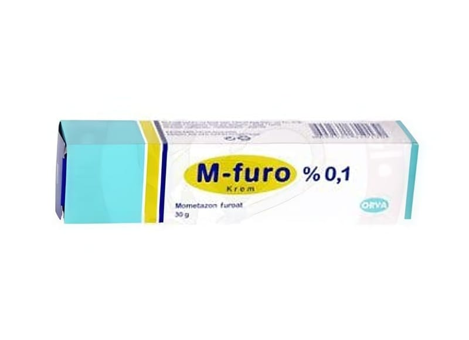

M-Furo %0,1 Krem (30 g)

Ne için kullanılır
KT · Bölüm 1 M-FURO beyaz, pürüzsüz krem olup, 30 gram krem içeren alüminyum tüplerde bulunmaktadır. M-FURO, deriye sürülerek kullanılmak üzere hazırlanmış, kortizon-tipi bir hormon ilacıdır. Güçlü kortikosteroidler sınıfında yer alır. Bu ilacı kullanmaya başlamadan önce bu KULLANMA TALİMATINI dikkatlice okuyunuz, çünkü sizin için önemli bilgiler içermektedir.
Bu kullanma talimatını saklayınız. Daha sonra tekrar okumaya ihtiyaç duyabilirsiniz. Eğer ilave sorularınız olursa, lütfen doktorunuza veya eczacınıza danışınız. Bu ilaç kişisel olarak sizin için reçete edilmiştir, başkalarına vermeyiniz. Bu ilacın kullanımı sırasında, doktora veya hastaneye gittiğinizde doktorunuza bu ilacı kullandığınızı söyleyiniz. Bu talimatta yazanlara aynen uyunuz. İlaç hakkında size önerilen dozun dışında yüksek veya düşük doz kullanmayınız.
Bu ilaçlar belirli cilt problemlerinden kaynaklanan kızarıklık ve kaşıntıyı azaltmak amacıyla cildin yüzeyine uygulanır. M-FURO; psöriyazis (sedef hastalığı), atopik dermatit (egzama), tahriş edici maddelere bağlı ve/veya alerjik dermatit gibi mometazon furoata yanıt veren bazı iltihaplı deri hastalıklarının tedavisinde kullanılır. Psöriyazis dirseklerde, dizlerde, saçlı kafa derisinde ve vücudun diğer bölgelerinde kaşıntılı, pullanan, pembe lekelerin görüldüğü bir cilt hastalığıdır. Dermatit cildin dış kaynaklı ajanlara (örn., deterjanlar) karşı reaksiyon göstermesiyle ortaya çıkan ve deride kızarıklık ve kaşıntıya yol açan bir hastalıktır.